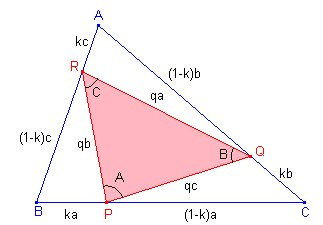
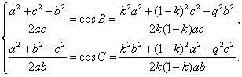
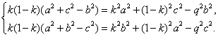
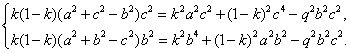
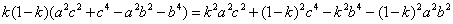
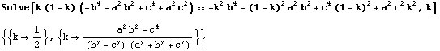
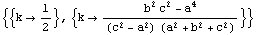
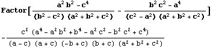
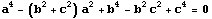
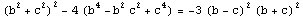

|
P, Q, R denotan puntos sobre los lados BC, CA y AB, respectivamente, de un triángulo dado ABC. Determinar todos los ABC tales que si BP/BC = CQ/CA = AR/AB = k (distintos de 0, 1/2), entonces PQR (en este orden) es semejante a ABC. |
|
Klamkin.S. (1977): Eureka. Vol 3. Januay. N1. Problema 210. Propuesto por Juan Bosco Romero Márquez |
Solución de Francisco Javier García Capitán

En primer lugar, digamos que PQR será equivalente a ABC para cualquier k si ABC es equilátero. El problema consiste en determinar si hay algún triángulo más que cumpla la condición.Supongamos el problema resuelto, como en la figura.
Usando el teorema del coseno para los ángulos B y C en los triángulos BPR y CQP, respectivamente, tenemos:

Quitando denominadores,

Multiplicamos la primera por c^2 y la segunda por b^2,

Restando,

Resolvemos la ecuación, que es de segundo grado en k.

Partiendo de los ángulos C y A, habríamos obtenido:

Como el valor de k debe ser el mismo, la expresión

debe anularse. Como el discriminante de la ecuación en a

es
, sólo habrá raíces reales para a si b=c, caso que ya hemos excluido.Por tanto, sólo los triángulos equiláteros cumplen las condiciones del problema.